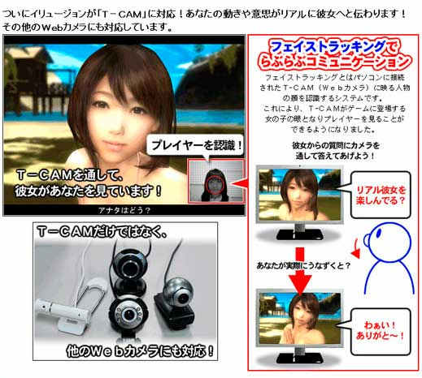
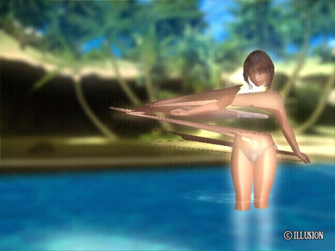
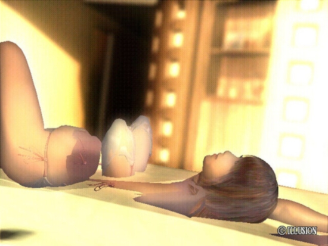

"Real Kanojo" (Real Girlfriend) recently got some press.

To the best of my knowledge its the first dating/erotic simulator game to approach the uncanny valley of photorealism. Technologically speaking it also is by far the most ambitious thing I've heard of, incorporating webcam-based face-tracking that she can respond to, 3D stereoscopic glasses support to get the full bosomy effect, and so on. I'm not incredibly familiar with the topic, but dating sims and their more explicit variations have never quite caught on in the west like they have in Japan. Neither have Love Pillows - but hey, why not. Obviously, being a bit taboo here, this kind of release has generated a fair bit of interest and buzz.
Inevitably though, Lionhead's early Natal showcase demo (Milo) comes to mind. Facial recognition first, speech recognition? Use of the real-time motion capture to capture the player's physical body and movements? Natal could read your virtual position relative to an in-game entity, allowing interaction and influence. Although Natal most certainly will be limited in most respects, particularly in speech recognition, anything seems possible with that as a starting point.
When the Wii was released, there was definitely some speculation about the use of Wii in potentially adult contexts, and even on DS as well. One female game designer concepted an early abstract design built around the DS hardware constraints that centered on the use of the touch screen in "teaching techniques of female sexual gratification to a female target audience."
Anyway, what I most enjoyed about hearing about this game is seeing some of the surrealistic visual rendering bugs that seem to be prevalent in the release for lower-capacity PCs. The level of photorealism combined with the sexual/fantasy/wish-fulfillment nature of this software seem to heighten the bizarreness of these images - making them all the more twisted. These two images were by far the highlights for me.

When people play this kind of game for arousal, the purpose is to get lost in the fantasy - to imagine it as if it were real, or to imagine yourself brought into in its unreality. Very few other types of games and interactive experiences result in something like this. Playing a FPS or RPG is traditionally all about escapism - but there is not an intended (usually) physical response in something as primal and fundamental as sexual desire (or release) in the player. Seeing the body/object sharply twisted and fragmented in this way is like a swift slap in the face - taking the player away from the fantasy immediately. Playing a non-erotic game and experiencing these kinds of bugs can be humorous or irritating - but I doubt quite as much as surreal or jarring as within this context.

Kotaku called it a "Real Girlfriend Gallery of Horrors", but I think I'd be more likely to play a game with this kind of bizarre imagery as part of the gameplay than the original.